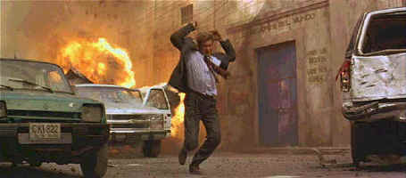

Parameount/1994/141m/WS 2.35
Through close to two and a half hours, director Phillip Noyce controls the pace of the film with consistent tension. The film falls short of perfection in its set piece finale, which lacks the weave of believability that has held the film together so well. The action sequence fails also to generate the excitement of the earlier, beautifully realized, attack on diplomatic convoy arriving in Columbia.
Production values on Clear and Present Danger are impeccable. Every detail feels right. From the clothing to the furniture, the pieces of the production puzzle mess in harmoniously. From Washington, D.C. to Panama City to the South American jungles, the filmmakers create consistently realistic pictures. Add the splendid photography of Donald McAlpine and James Horner's active military score to an intelligent screenplay and the result is top-notch entertainment.
 |
One step ahead of the bullets. ©Paramount |
Harrison Ford may well be the perfect action hero. He can throw a punch
with the best of them. He looks comfortable in either a suit or a rakish adventurer’s
chapeau. He can puzzle through a problem without the aid of special effects. Ford simply
invests Jack Ryan with an extra helping of reality that makes Clear and Present Danger
a better film. Ford gets excellent support from Henry Czerny playing presidential
aide Robert Ritter. The computer battle between Ford and Czerny is beautifully
constructed. It may be the best computer dramatization I have seen on the big screen.
James Earl Jones adds needed warmth as Admiral Greer and Willem Dafoe is fiercely
convincing as covert operative. And Miguel Sandoval swings a mean bat as a Columbian drug
lord Ernesto Escobedo..
Paramount has done a crackerjack job in bringing Clear and
Present Danger to DVD. The images are bright enough to pop right off the screen.
Detail is delivered without excessive enhancement. Colors are vibrant, blacks
velvety. Explosions, often difficult transitions, are handled with
spectacular control. The finest details are clearly enunciated. A big, dynamic Dolby
Digital 5:1 mix explodes aggressively along with the exciting images. During the cramped
street auto ambush, bullets are located in the surrounds with piercing precision.